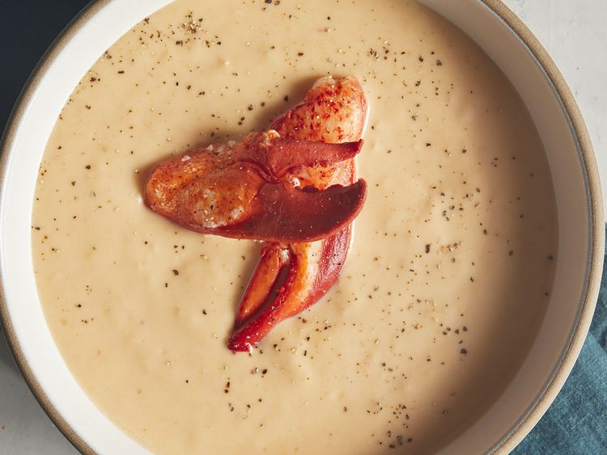

Lobster Bisque

Description
Indulge in the rich, velvety luxury of homemade lobster bisque. This classic French seafood soup is a symphony of flavors, combining the delicate sweetness of lobster with a creamy, comforting broth. Packed with fresh herbs and spices, each spoonful is a taste of coastal elegance.
Whether you're hosting a special occasion or simply craving a gourmet treat, this lobster bisque recipe is sure to impress.
Ingredients
- 3 tablespoons butter
- ¼ cup chopped fresh mushrooms
- 2 tablespoons chopped onion
- 2 tablespoons chopped celery
- 2 tablespoons chopped carrot
- 1 (14.5 ounce) can chicken broth
- ⅛ teaspoon salt
- ⅛ teaspoon cayenne pepper
- 1 ½ cups half-and-half
- ½ cup dry white wine
- ½ pound cooked lump lobster meat
Steps
- Step 1: Melt butter in a large saucepan over medium-low heat. Add mushrooms, onion, celery, and carrot. Cook and stir until tender, about 10 minutes.
- Step 2: Stir in chicken broth, and season with salt and cayenne pepper. Bring to a boil, then simmer for 10 minutes.
- Step 3: Pour vegetable and broth mixture into the container of a blender, and add 1/4 cup of the lobster meat. Cover, and process until smooth.
- Step 4: Return to the saucepan, and stir in half-and-half, white wine, and remaining lobster meat. Cook over low heat, stirring frequently until thickened, about 30 minutes.
- Step 5: Serve hot and enjoy!